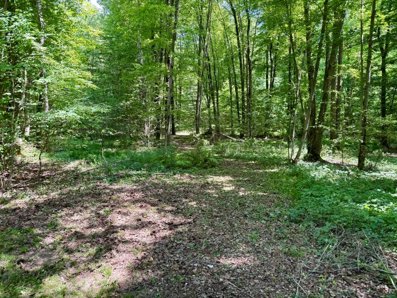
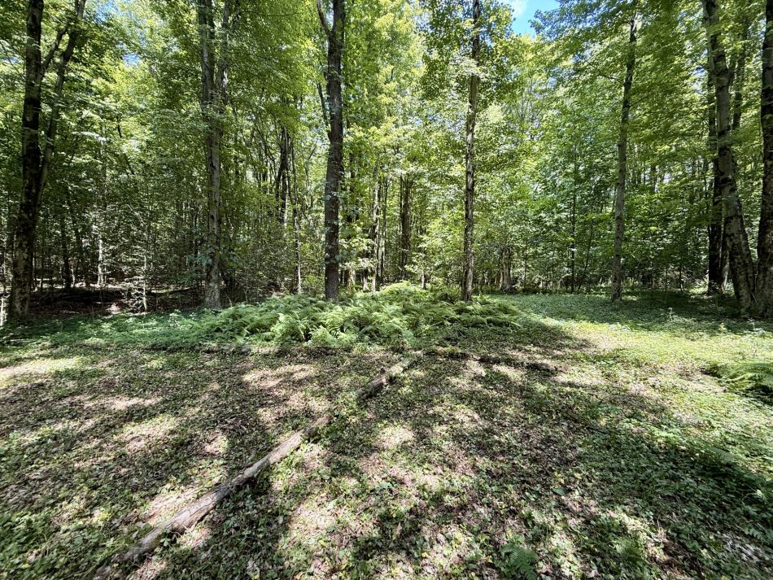

It was the second anniversary of my mother’s death—a day marked by 90-degree humidity and an air so still it felt like the land itself was holding its breath. I decided that the best way to occupy the day was through physical, intentional labor. I headed out to the perimeter of the yard along the tree line, a chore that demands constant attention when the weather turns warm. I ended up staying out there for two and a half hours, working to beat the heat of the approaching afternoon.

While working the northeast corner of the back yard, I noticed the way the morning light cut back on a diagonal, carving out a slice of the woods I hadn't looked at closely before. I told myself, let’s create a path back there and see what’s actually going on.
That decision pulled a dormant memory to the surface: a walk through this same area years ago, long before this house existed, when the land was just a barren, abandoned orchard. I remembered a female figure showing me where the teaberry grew, and the distinct, sharp taste of the leaves.
As I cleared the dense, ivy-like strawberry groundcover, the path began to reveal itself. I crossed a small, dry creekbed and climbed a slight rise that opened into the clearing. There, I found two trees that had fallen long ago, settling across one another in a perfect 'X.' I don’t believe in coincidences; finding that mark felt like a quiet affirmation that I was meant to find this spot.

I’m letting the terrain dictate the turns rather than imposing a design. It’s an act of listening, and I’m finding that I won't be the only one using this route—the deer trails already weave through the woods, and I’m essentially opening a path that we’ll be sharing.
As for what becomes of the clearing, I’m not sure yet. I imagine a quiet, intentional spot for meditation, but I’m hesitant to clutter it with furniture. I want to ensure that whatever I add truly honors the space. And, practically speaking, if this is going to be a place where one stops to tune into the rhythm of the woods, it has to be a place where you can sit still without being overwhelmed by the local insect population.
For now, the path itself is the project. It’s a labor of discovery, clearing a few more feet of earth each time I’m out here, watching it wind its way deeper into the timber. There is a specific clarity to be found in the heat and the exertion, a way of grounding myself in what is here, right now, in my own backyard.